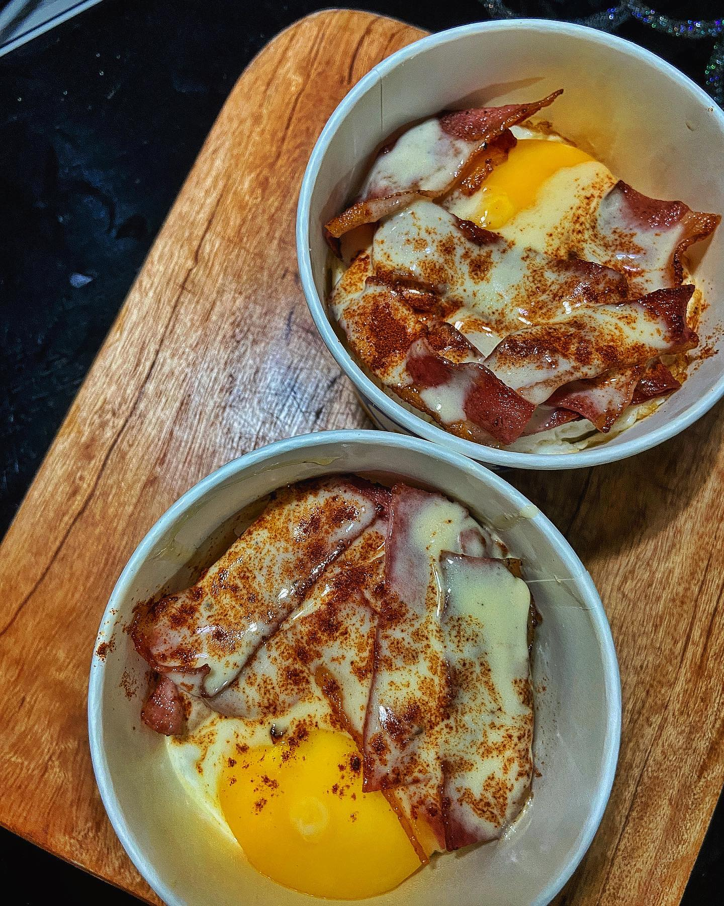
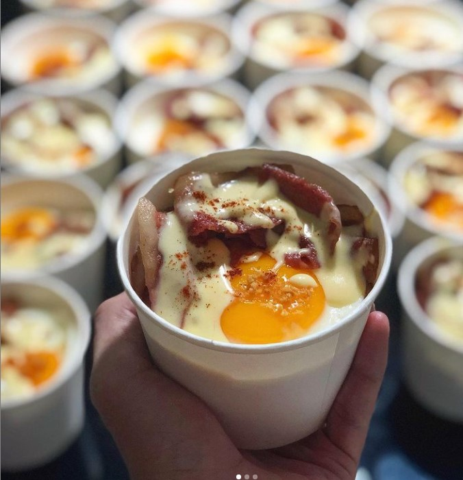
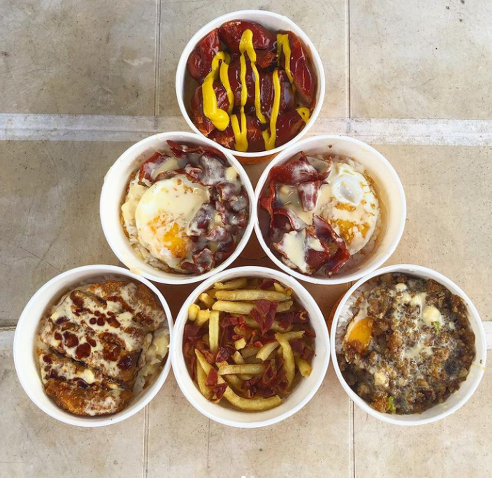
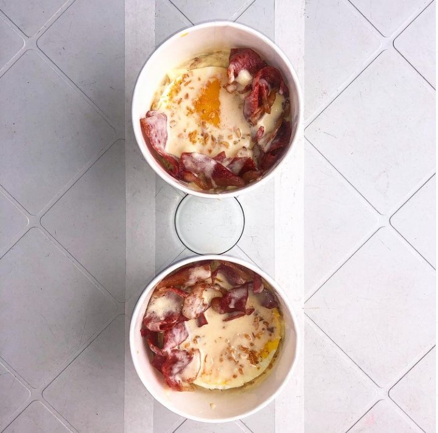
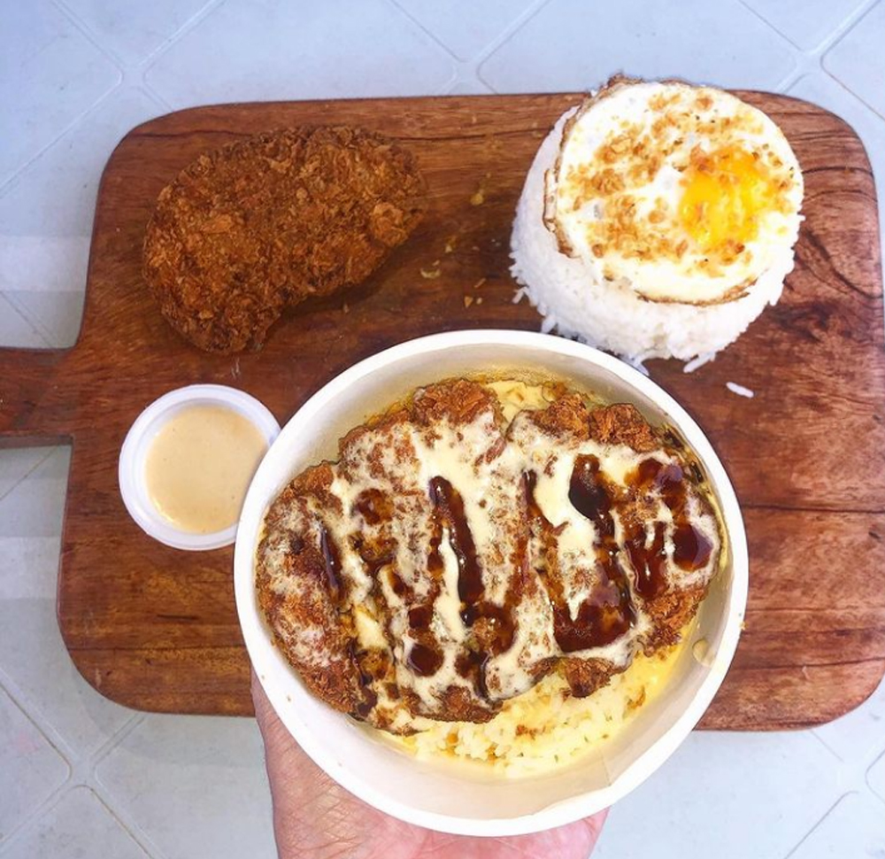
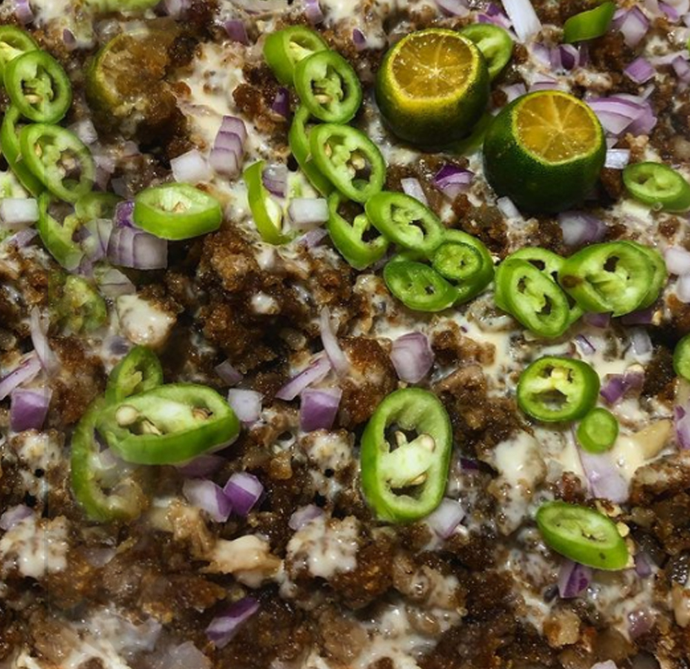
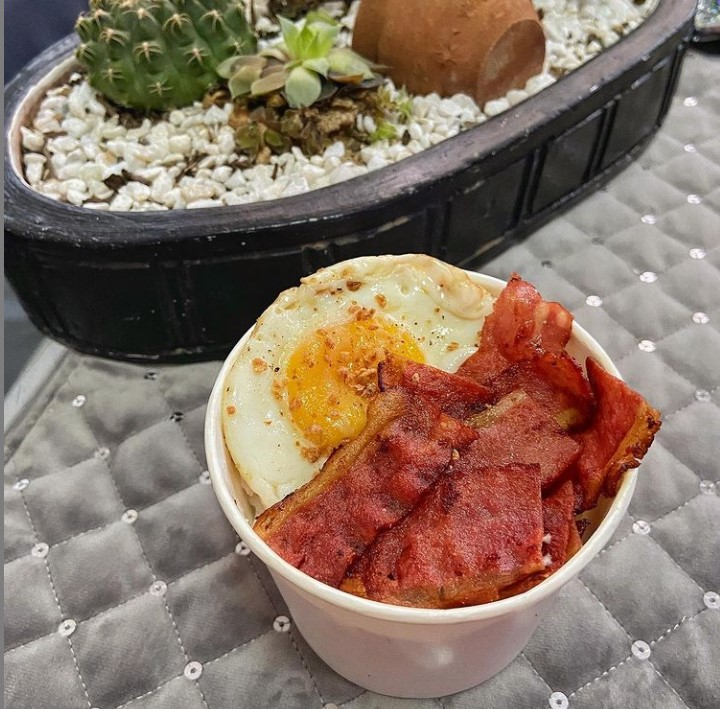
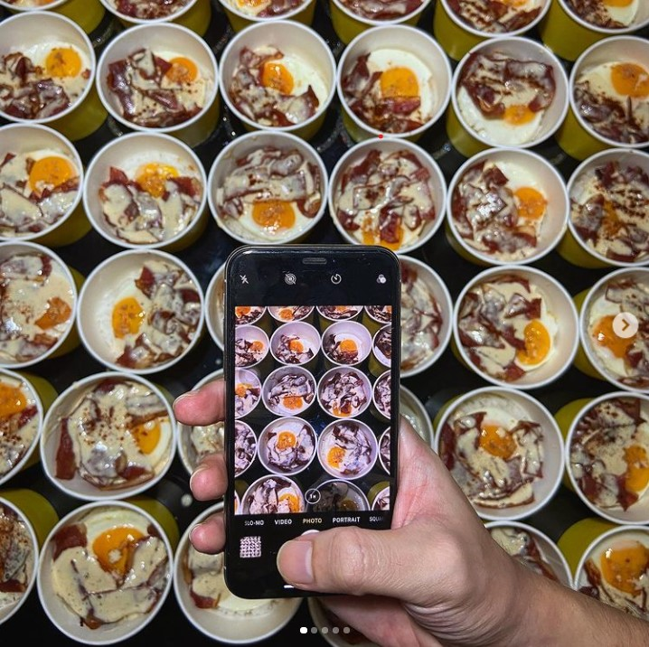

.jpg)
.jpg)
.jpg)
.jpg)
.jpg)
.jpg)
TESTIMONIES

"THE BURGER IS NOT EXPECTATION VS. REALITY"
Super sarap ng burger hindi expectation vs. reality kasi kung ano yung nasa picture yun din yung dumating. Ang generous din sa veggies and ang thick ng patty. Babalik-balikan mo siya kasi worth it yung 85 pesos mo. Masasabi ko din na gusto ko ma-recommend ito sa mga friends ko kaya dapat lang na bumili sila kay Ate Carla’s Bacsilog, I think I am inlove with this burger.
"ANG CHEESE NA HINDI NAGKUKULANG!!!"
Masarap siya sobra! Pati ang mga cheese sauce hindi nagkukulang. Kung pwede lang sana sa susunod mas damihan pa kasi gusto ko masyado yung cheese eh! I can't stop to think about it everytime I see any condiments mixed with cheesy sauce! Pati sa bacon hindi ka binitin, nakakamangha ngayon lang ako naka experience na mayroon isang punong bacon strips. Hindi ko makakalimutang ang experience na ito dahil alam ko nahanap ko na ang makakapagpabusog sakin. Grabe sulit talaga! Sana mas damihan pa!!!
"SA PICTURE PA LANG ALAM KO MAUUBOS KO NA"
Sa picture pa lang mga boss. Alam ko sa sarili ko na mauubos ko kaagad ng walang problema kasi hindi talaga ako makapaniwala na ganun kasarap ng sobra. SOLID! Sigurado ako sa sarili ko na uulitin ko itong mga orders ko nang hindi mag-dadalawang isip. Mag-iinvite din ako ng mga kaibigan ko para i-try din nila yung Bacsilog ni Ate Carla. Hindi marunong magsinungaling sa business yung owner at family niya
"HINDI KA LUGI, AUTO-BUY KAAGAD!"
Solid si Dan sa ganitong business. Hindi ka lugi sa quality and assurance ng mga food deliveries niya. Akala mo 'yun bigla kaagad ako napabili noong nakita ko mga pictures nung menu ni Ate Carla's Bacsilog. Kagulat-gulat ng makita ko agad yung bacsi kasi hindi ko akalain na kagaya talaga sa picture. IT IS NOT AN EXAGGERATION! What you see is what you get. Auto-buy kaagad sa mga bago at susunodn na items!
"GENEROUS AT ITS FINEST! NOTHING MORE TO SAY!"
Masarap po! Will definitely order again. Hindi po overcooked yung bacon kaya okay na siya. Generous din po yung dami ng rice and sauce although san po sa susunod pwede kami makapag-add ng sacue kahit for a fee, kasi mas enjou po ng mga kasama ko yung maraming sauce talaga. Thank you so much! Sa uulitin, sigurado na babalik ako dito sa Ate Carla's Bacsilog. I really recommend this to everyone
"I CONSIDERED CHEAT DAY FOR THIS!"
Napasarap ako ng sobra at nag-ask pa na ng maraming cheese sauce. Hindi ko din matiis ng sobra na ginawa ko mag cheat day para dito. Despite being in a diet. Hindi ko lang talaga matiis kasi sobrang sarap niyang kainin. Saka napaka-tempting ng mga posts sa FaceBook at Instagram page nila. Hindi ko akalain na ma-attract ako ng sobra sa isang photo at lalo na nung natikman ko sobrang sarap.
"VEGGIES ARE ALWAYS PRESENT!"
Despite having bacons and other meaty stuff. Makikita mo na halos walang fats yung mga meat na nilalagay nila sa food items nila. Lalo na sa bacsilog. Another thing is napaka-generous nila sa sauce at sobrang sarap pa halos I cannot stop making a lot of eatings kasi nga napakasarap. Sa susunod ulit mga kaibigan, try nyo ang mga food items nila sa menu! Hindi kayo magsisi ng sobra!
"COMING BACK ONCE! NOW, TWICE!"
Mga 'tol! Mayroon ako kwento! Nakadalawa akong kuha ng order. At halos hindi ko makalimutan yung unang try ko sa pagkain nila! I want more, in fact, I went to order another one mga lods! Tell you what...hindi ako nagsisi, sa halagang 65 pesos lamang mas busog pa ako sa pagkain nila kaysa sa mga ibang quick food order and delivery. Kung ako sa inyo wag kayo magpahuli, sobrang sarap mga lods!
"OTHER THAN BEING A BUSINESS, THE BRAND ITSELF IS AN INSPIRATION"
Yung mga kaibigan ko na-inspire sa ginawa ni Dan, dahil nakita nila yung mga thread niya sa Twitter at naging successful 'yung tinayo niyang business foundation para sa pangarap niya na makapagtayo ng isang food business franchise. Masipag kasi siya at matalino kaya talagang isa din siya sa malaki ang maabot na pangrap. It was really an admiration to see him being a figure to others.